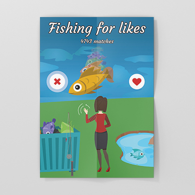
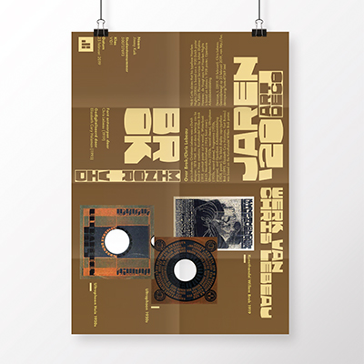
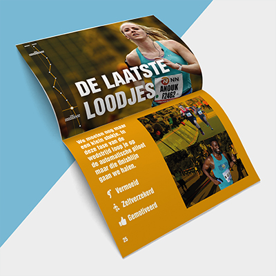
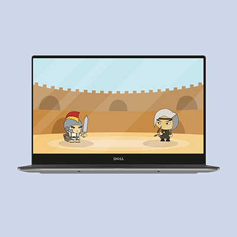
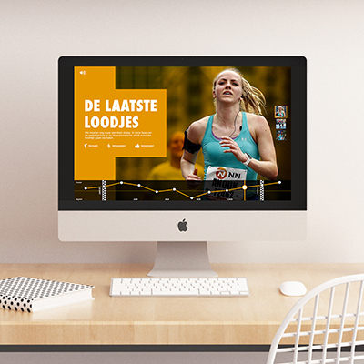
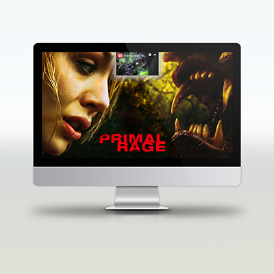
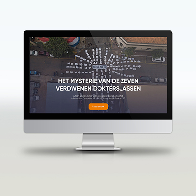
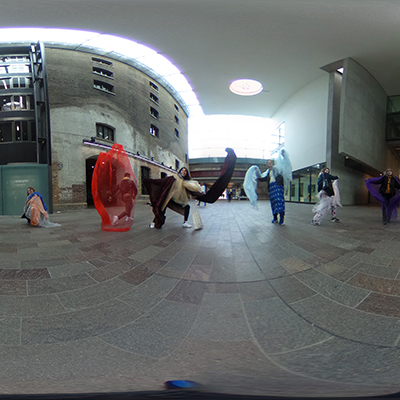

Persoonlijke pagina Jimmy Kuik
Minor Visual Interface Design 2018/2019

Beeldtaal

Typografie

Ontwerpen 1
Grid & Kleur

Interface & Beweging

Ontwerpen 2
HTML/CSS

Webtypografie
(Herkansing link)

Ontwerpen 3

Groepsfoto Londen